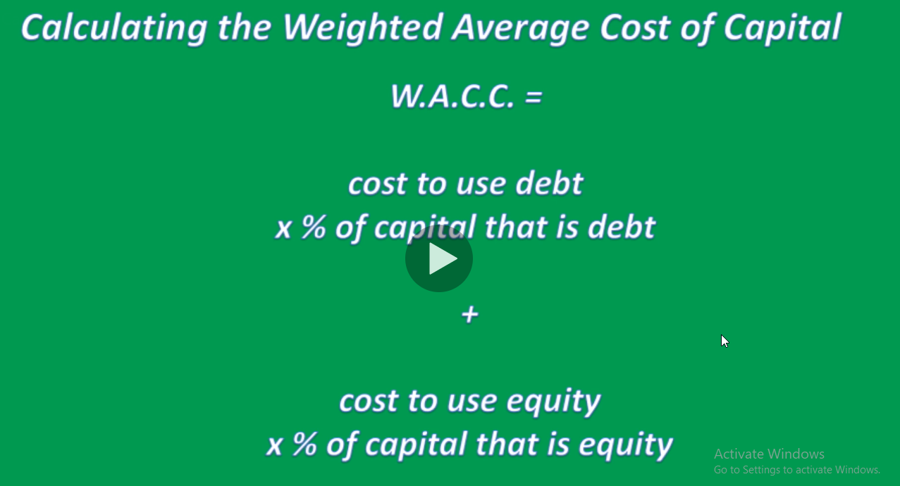

Valuation
Value investors-->meaning investors that like to get a dividend yield and buy stuff that's relatively cheap
Growth investors-->love companies that are growing very fast
Garp investors-->growth at a reasonable price

-->at the end all growth investments become value investments
-->we will get average of those three to get target price
v = (price/revenue+Discounted cash flow + price/earnings)/3
-->We want to minimize the impact of a target price calculation that might be incorrect. Hence, using 3 or more valuation methodologies minimizes/normalizes the margin of error.
------------------------------------------------------------

-->so if you take the future cash that any company makes and discounted today that's the value the company


-----------------------------------------------------------------------
Calculating the Terminal value
-->the interest rate mentioned in this calculation is the interest rate for that particular company which is always larger than the government's interest rate
---------------------------------------------------------------------
W.A.C.C

---------------------------------------------------------------------
valuation price/revenue
-->How should we value companies that are going public but are not yet profitable? there's no cashflow there's no earnings but they have revenue so the answer is price/revenue it's a great vauation technique when company not profitable
-->if you think logically about price/revenue it's really the same thing as markert cap/revenue
-->go to finance.yahoo.com to get market cap and revenue of twitter and facebook
--------------------------------------------------------------
price/earnings
-->price to earnings(P/E) is similar to price to revenue(P/R) except you factor in growth more often with P/E than you do with P/R
-->A company usually trades on a P/E basis inline with its earnings growth rate
-->for example, a company that has earnings growing at 20% per year likely trades at 20x's earnings
-->for example, a company that has earnings growing at 10% per year likely trades at 10x's earnings
-->The stock market usually trades around 15x's earnings as the average stock has earnings growing at 15%
-->if a company misses earnings estimates by 20% (for example), then the stock usually gaps down by 20% and vice versa
-->Price/Earnings is the same thing as market capitalization / net income
-->PEG ratios measure a P/E ratio relative to earnings growth, stocks are usually bargains below a PEG of 1 and expensive above a PEG of 2
-->A company that trades at 20x's P/E and has earnings growing at 20% trades at a PEG of 1x
-->a company that trades at 20x's P/E and has earnings growing at 40% trades at a PEG of 0.5x's and is often a bargain (good buy idea)
-->A company that trades at 20x's P/E and has earnings growing at 10% trades at a PEG of 2x is often too expensive and usually a sell or a short candidate for hedge funds
-------------------------------------------------------------

---------------------------------------------------------------
Amazing formulas to assess financials
-->How profitable is a company for every dollar they sell of inventory before expenses?
Cost of Goods Sold/Revenue = Gross Margin
-->How profitable is a company for every dollar they sell of inventory after most expenses?
EBITDA/Revenue = Operating Margin
-->How profitable is a company for every dollar they sell of inventory after all expenses?
Net Income/Revenue = Net Profit Margin
-->How profitable is a company for every dollar they have of assets?
Net Income/Assets=Return on Assets
-->How profitable is a company for every dollar they have of equity?
Net Income/Equity=Return on Equity
-->these two formulas use income statement and balance sheet to assess profitability
1-Net Income/Assets=Return on Assets
2-Net Income/Equity=Return on Equity
-->How do we know if a company has way too much debt?
1-Does the company have more debt than assets?
Total liabilities/Total Assets = Debt to Assets
2-Does the company have more debt than equity?
Total liabilities/Total Equity = Debt to Equity
3-Can a company pay the interest on its debt?
EBITDA/Interest = Interest Coverage Ratio
-->last ratio should be bigger or you should be worry
-->How long does it take a company to turn stuff they sell into$?
1-How many days of inventory does a company have on hand?
(Inventory/Cost of Good Sold)*365 = Inventory Days on Hand
Inventory=($1000 at year end/COGS was $100000 this year)*365 = 3.65 days of inventory days on hand
-->How is the company doing/valued versus the competition? it's tough to compare companies in different countries on all metrices